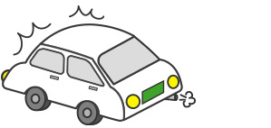
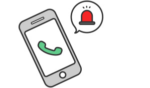
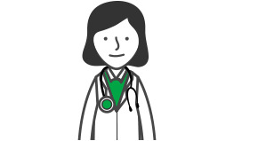
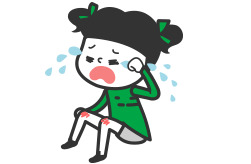
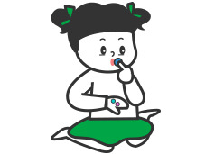
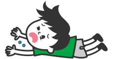
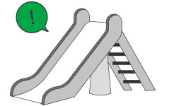

어린이안전사고
어린이안전사고
어린이는 위험 상황에 대한 이해와 판단이 부족하기 때문에 많은 사고 위험을 가지고 있습니다.
따라서 세심한 주의와 관찰이 필요합니다.
교통 안전에는 이렇게 행동합니다.



- 경미한 접촉이라도 차에서 내려 어린이의 피해 상황을 확인하세요.
- 경미한 사고로 별 피해가 없을 것으로 판단하고 그대로 가거나, 어린이의 치료 후라도 부모와 연락하지 않거나
어린이에게 연락처 등을 주지 않는 경우 뺑소니로 처벌 받을 수 있습니다.
- 어린이를 안정시킨 후 구급차(119)를 부르세요.
- 어린이가 교통사고로 의식이 없을 때는 흔들거나 안아 올리지 마세요.
- 머리를 뒤로 젖히거나 몸을 차갑게 하는 행동은 기도를 막을 수 있는 위험한 행동입니다.
- 반드시 의사의 진단을 받게 하세요.(가벼운 부상정도를 판단하지 말고)
- 어린이는 부상당한 부분이나 부상 정도를 바르게 전달하지 못할 수 있습니다.
 119는 화재신고는 물론 인명구조, 응급환자이송 등을 요청하는 번호입니다.
119는 화재신고는 물론 인명구조, 응급환자이송 등을 요청하는 번호입니다.
알아두면 좋은 재난정보
 화재가 많이 발생하는 계절은?
화재가 많이 발생하는 계절은?
- 1년 중 화재가 많이 발생하는 것은 겨울철(12 ~ 2월)이며 이는 겨울에 불의 사용도가 높고 취급의 부주의가 가장큰 원인입니다.
- 화재가 다발하는 계절은 지역에 따라서 다르나, 기온이 낮은 겨울이나 봄에 많으며, 이는 습도 및 계절풍과 관련 있습니다.
Q & A
Q. 고층건물에서 화재 발생시 대피요령은 ?
- A. 화재가 발생한 사무실에서 탈출할 때에는 문을 반드시 닫고 나와야 하며 탈출하면서 열린 문이 있으면 모두 닫읍시다.
- 닫힌 문을 열 때에는 손등으로 문의 온도를 확인하고 뜨거우면 절대로 열지 말고 다른 비상통로를 이용합시다.
- 건물 밖으로 대피하지 못한 경우에는 밖으로 통하는 창문이 있는 방으로 들어가서 구조를 기다립시다.
- 방안으로 연기가 들어오지 못하도록 문틈을 커튼 등으로 막고, 주위에 물이 있으면 옷에 물을 적셔 입과 코를 막고 숨을 쉬세요.
- 전화가 있다면 119로 전화하여 자신의 위치를 정확하게 알립시다.
가정 안전에는 이렇게 행동합니다



- 아이가 침대에서 떨어지거나 가구에 부딪혔을 때 가벼운 상처는 소독약을 바르고 세게 눌러서 지혈하세요.
- 상처가 없더라도 토하거나 경련이 있거나, 눈빛이 흐려지고 안색이 창백해지거나, 계속 잠만 자려할 때, 귀나 코에서
피가 날 때, 심한 통증이나 식은 땀을 흘리며 숨쉬기 힘들어 할 경우 119 구조대에 도움을 요청하고, 도착할 때까지
몸을 따뜻하게 해주세요.
- 골절이 의심되면 골절 부위를 펴지 말고, 골절된 부위를 움직이지 않게 하여 그대로 병원으로 옮기세요.
- 아이가 의식을 잃었다면 신경 손상의 가능성이 있으므로, 아이를 끌어안거나 들어서 흔들지 말고 119 구조대에 도움을
요청하세요.
- 아이가 장난감 조각을 코에 넣었을 때 이물질이 작고 동그란 경우, 반대쪽 콧구멍과 입을 막아주며, 코를 풀게
하세요.
- 이물질이 크거나 한두 번의 시도에 빠지지 않으면, 무리해서 빼지 말고 병원에 가서 진료를 받으세요.
- 아이가 이물질을 삼켰을 경우 즉시 아이를 옆으로 눕혀서 이물질이 더 깊숙이 들어가지 못하게 하세요.
- 이물질이 보일 경우에만 꺼내 보고, 바로 119 구조대에 도움을 요청하세요.
- 유독물질을 마신 경우 섣불리 토하게 하거나 물을 마시게 하지 말고, 성분이 적힌 용기를 확인해 119 구조대에 도움을
요청하세요.
- 병원에 갈 때, 독성물질의 성분이 적힌 용기를 함께 가지고 가면 치료에 도움이 될 수 있습니다.
놀이시설 안전에는 이렇게 행동합니다.

- 놀이터에서 사고가 발생하면, 어린이를 안전한 곳으로 옮겨 응급처치 하세요.
- 골절이 의심될 때는 어린이가 안정할 수 있도록 도와주고, 환부를 고정시켜주세요.
- 사고를 당한 어린이가 극도의 흥분상태인 경우, 통증을 느끼지 못하고 무리하게 움직이지 않도록 주의하세요.
- 환부를 고정했으면 바로 병원으로 후송하세요.
- 어린이의 의식과 호흡 상태에 이상이 있으면, 즉시 119에 신고하세요.
- 운행요원이나 안전요원있는 곳이라면 즉시 연락하여 응급조치를 받으세요.
- 사고 놀이기구가 보수·개선될 때까지, 어린이가 접근하지 못하게 하세요.
 교통사고
교통사고
 화재사고
화재사고
 어린이
어린이 수난사고
수난사고
 가축질병
가축질병
 댐 붕괴
댐 붕괴
 감염병 예방
감염병 예방